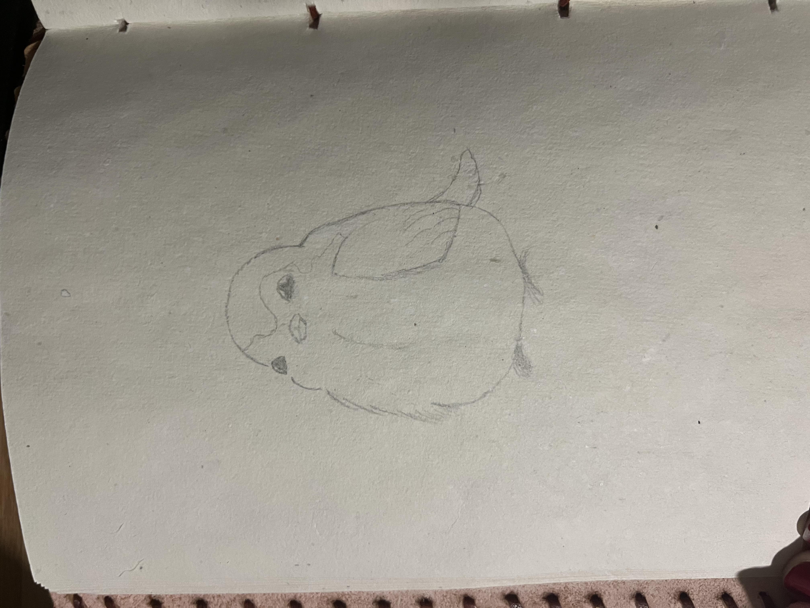
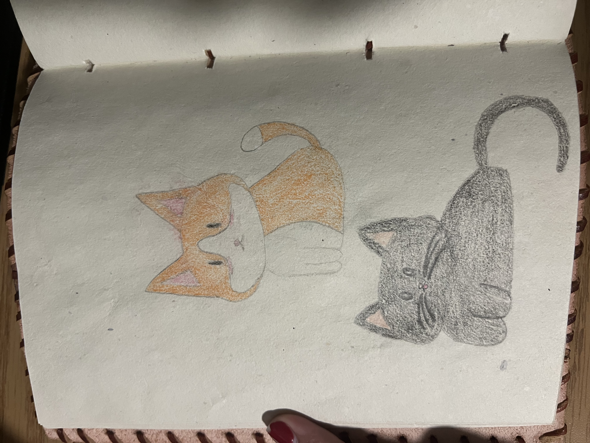
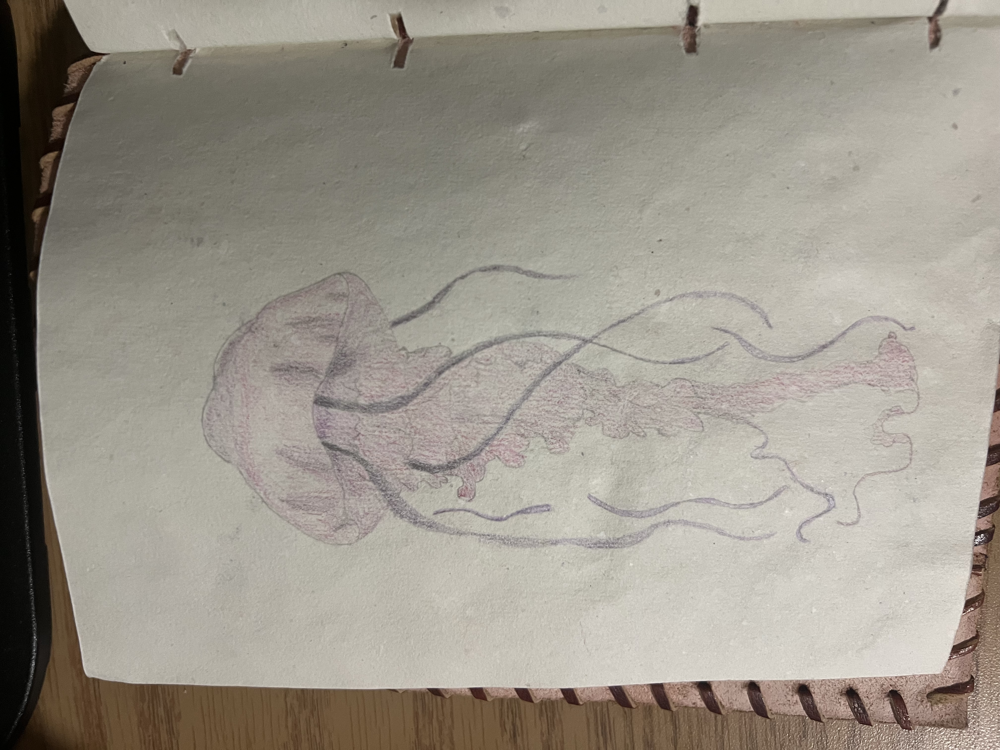
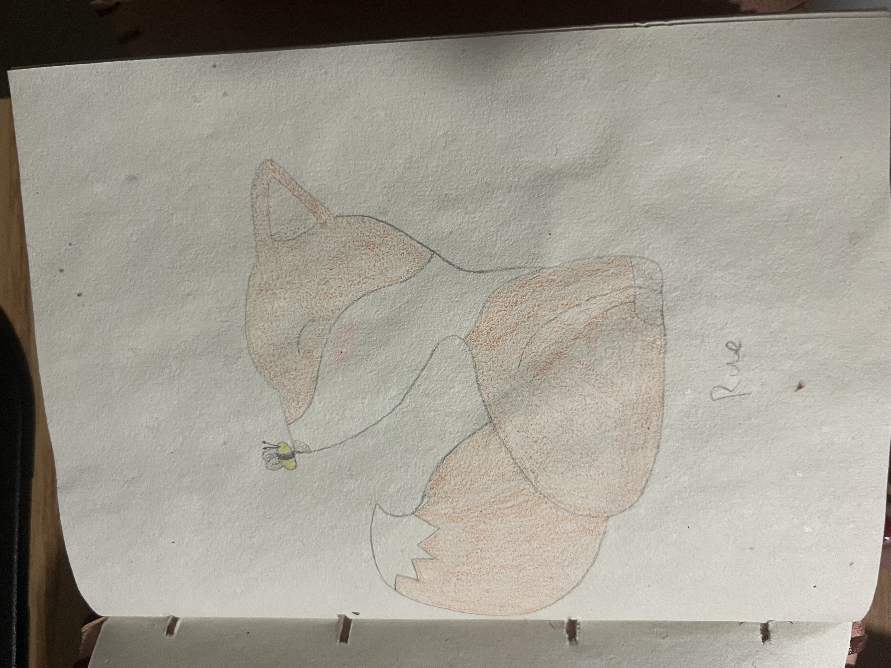
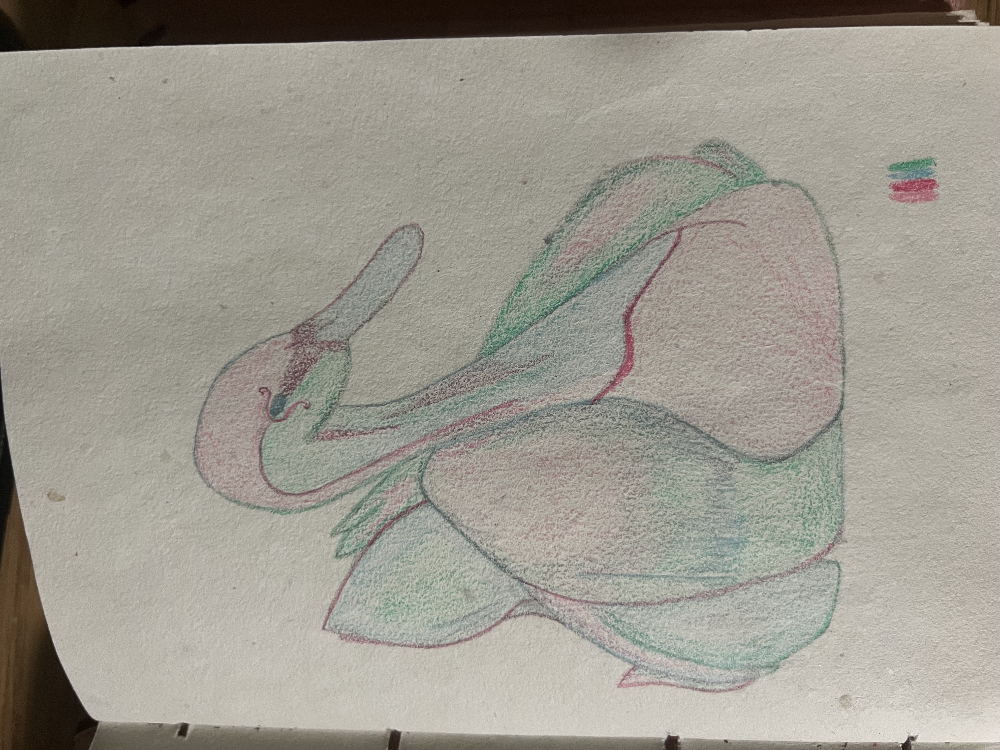

My first drawing of an animal is the jellyfish one. My most recent is the swan, which was a sketch requested by my mother. I really like how the colors turned out with that one; I think the color palette really worked.





I actually named the fox, "Rue," after a video game called One Shot. Rue is a fox in the game that's really important to the plot. Also, I have a soft spot for the cats because I think they turned out really cute, especially the black one.